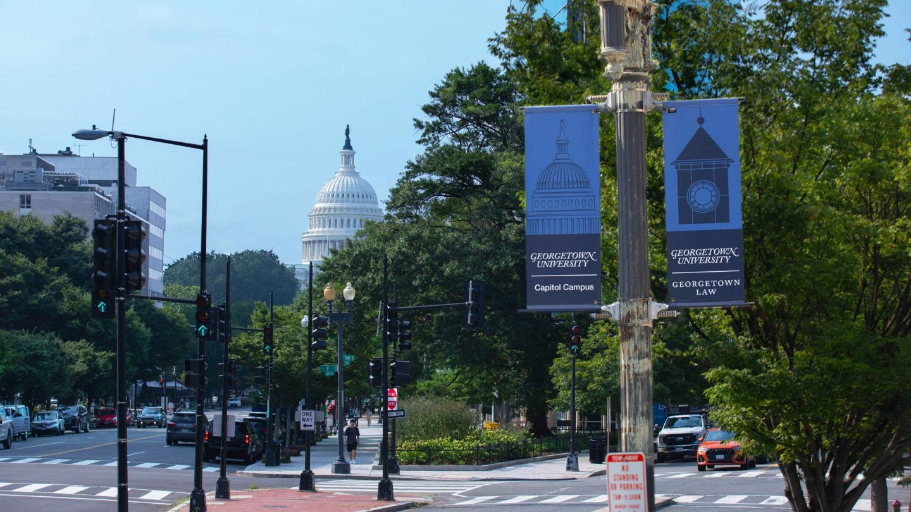
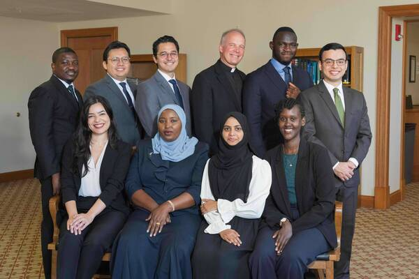
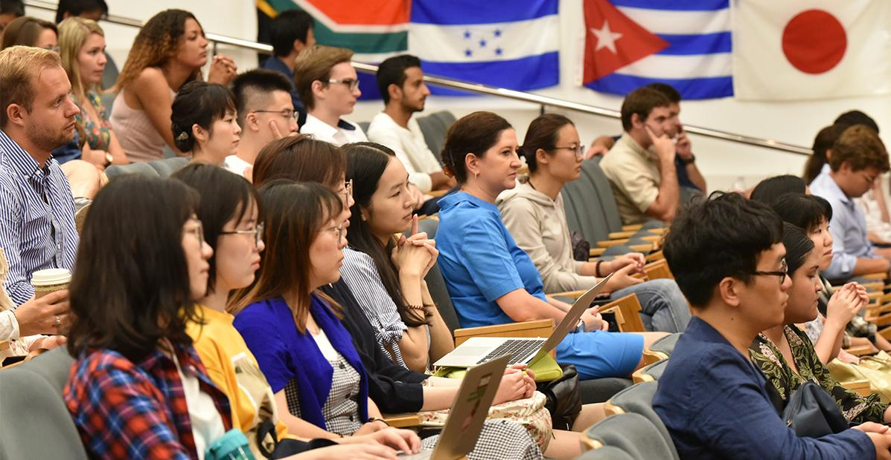
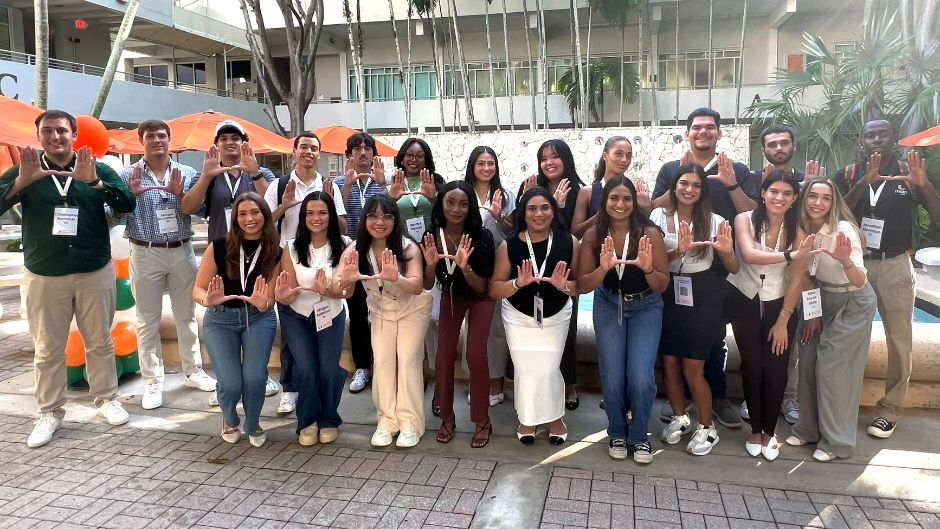
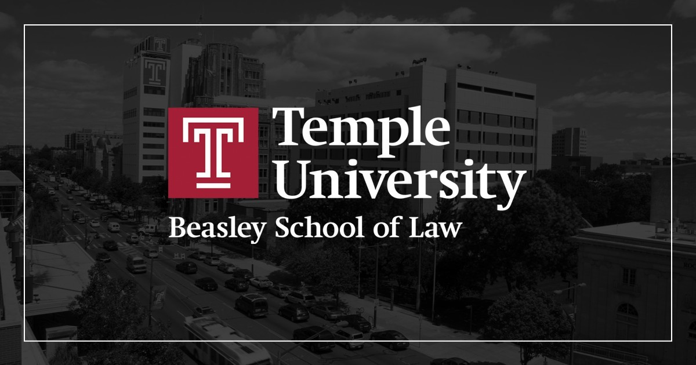
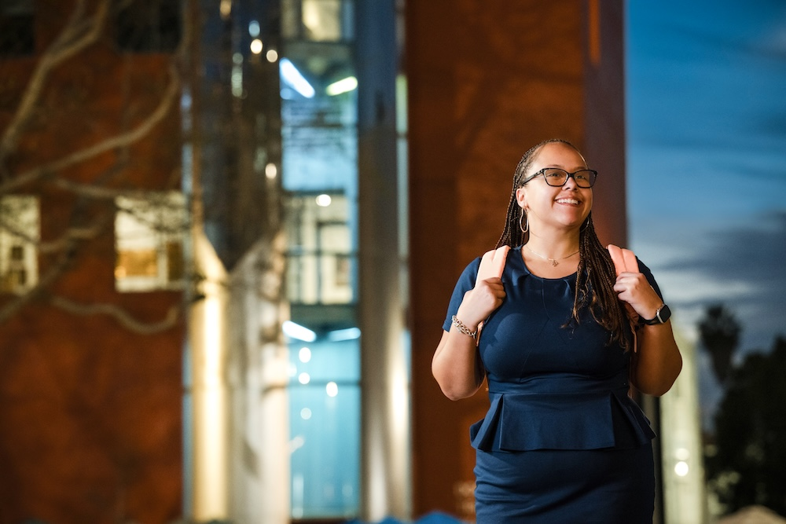
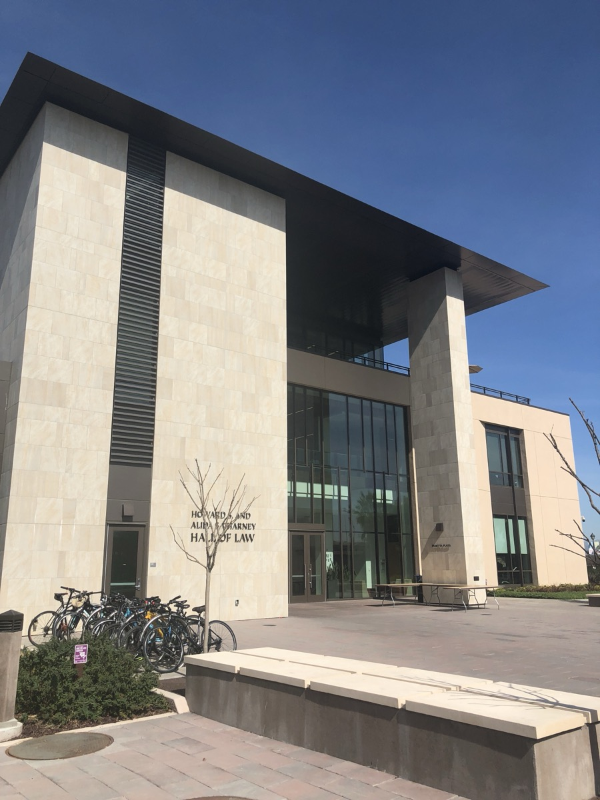
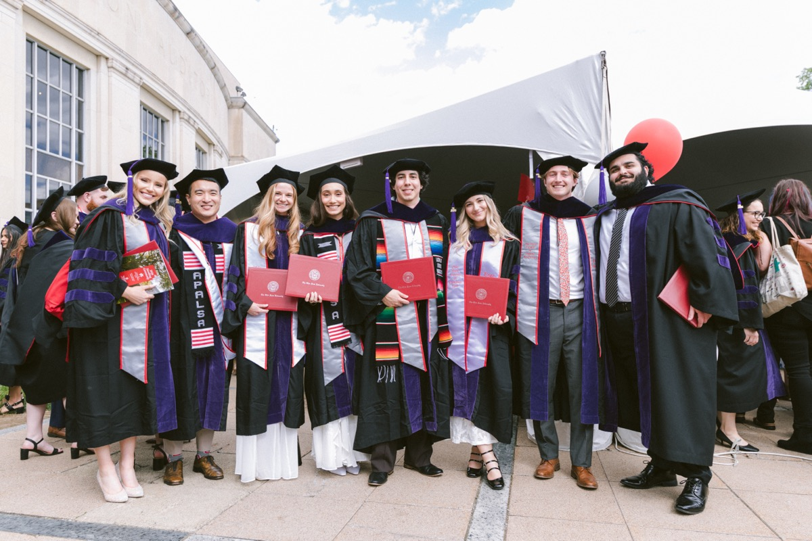

A note for Laura, June 2026
An LL.M. is a one year master's degree built for lawyers who already qualify somewhere else. Government lawyers, judges, NGO counsel, and diplomats use it as a bridge into international organizations, multilateral institutions, think tanks, and academic life.
Harvard Law School. Around 180 students from roughly 70 countries make up a typical LL.M. class, and you build your own course of study rather than following a fixed track. Aid is need based only, but it is real: the average grant covers about half of tuition, and for students with the deepest need, Harvard has covered full tuition plus part of living costs. There is also a scholarship for lawyers from the developing world with at least two years of human rights work behind them. See the program and apply
Cambridge, Massachusetts
NYU School of Law. Two of the strongest funding routes available to you sit here. The Hauser Global Scholarship covers full tuition and a stipend for ten to twenty students a year, open to anyone who graduated from a law school outside the US. The Podell Scholarship goes further: full tuition, living costs, and a flight to New York, reserved for citizens of countries the World Bank classifies as low income or lower middle income. Kenya qualifies. See the program and apply
Greenwich Village, New York
Georgetown Law. The LL.M. in International Legal Studies gives you one of the largest international law curricula of any US school, in a city full of the institutions you might eventually work with. Every admitted student is automatically considered for a scholarship, no extra form needed, and Georgetown already runs funding partnerships with several specific countries. Worth a direct email asking whether one exists for Kenya. See the program and apply

Washington, DC
American University, Washington College of Law. Their International Legal Studies Program is one of the oldest of its kind, with students from more than fifty countries and a deep alumni network across Washington's international organizations. Funding here is genuinely strong: an Alumni Fund Scholarship can cover full tuition, a Global Talent Development Scholarship covers half, and a separate merit award covers up to forty percent. See the program and apply
Washington, DC
University of Notre Dame. The LL.M. in International Human Rights Law is built around people with exactly your kind of background. Every admitted applicant is automatically considered for a tuition scholarship, no separate application, and the program's own director has said plainly that applying soon after the November opening meaningfully improves your odds. See the program and apply

South Bend, Indiana
Columbia Law School. The Human Rights Institute runs an LL.M. Human Rights Leaders program alongside the regular degree, pairing students with mentoring, leadership coaching, and partial to full tuition waivers. You request it inside your normal LL.M. application by naming it in your personal statement. See the program · Apply to the LL.M.
Morningside Heights, New York
University of Illinois. It will not turn heads the way Harvard or Columbia do, but the program has hosted students from Kenya before, and more than eighty percent of its admitted LL.M. students receive a tuition scholarship. If guaranteed funding matters more than prestige, take this one seriously. See the program and apply
Champaign, Illinois
UCLA School of Law. A genuinely strong international and human rights faculty, in a city you might just enjoy living in for a year. A Dean's Tuition Fellowship is automatically considered for every applicant, based on a mix of need and merit. See the program and apply

Westwood, Los Angeles
UC Berkeley School of Law. Run through Berkeley's Center for African Studies, the Mastercard Foundation Scholars Program covers full tuition, living expenses, a laptop, and round trip flights for master's students from across Africa, including the LL.M. The program's first three Berkeley Law scholars included a Kenyan trained lawyer who had served as a presidential advisor in Somalia, so the fit is a real one, not a stretch. You apply to the LL.M. directly and are then nominated into the scholarship. See the program and apply · Mastercard Foundation Scholars Program
Berkeley, California
University of Miami School of Law. Miami has run LL.M. programs for foreign trained lawyers since the 1950s, and enrolls around ninety LL.M. students a year across several tracks, including international law. That is a larger pipeline than the most selective schools offer, and partial scholarships are available for qualified international applicants. The alumni network spans more than ninety five countries. See the program and apply

Coral Gables, Florida
Temple University Beasley School of Law. Temple reviews LL.M. applications with an eye toward professional experience, not just academic pedigree. Every admitted student is automatically considered for internal scholarships, with some awards covering out of state tuition entirely. Philadelphia is cheaper to live in than New York or DC, which matters when you are counting every dollar. See the program and apply

Philadelphia, Pennsylvania
Loyola Law School, Loyola Marymount University. Loyola admits on a rolling basis through mid July, which means a complete application filed early can matter more than chasing a brand name. Every applicant is considered for merit scholarships of up to forty five thousand dollars, with no separate form. The campus sits in downtown Los Angeles, close to courthouses and firms, and the curriculum is unusually flexible for foreign trained lawyers. See the program and apply

Downtown Los Angeles, California
Santa Clara University School of Law. Santa Clara keeps its LL.M. class deliberately small, but the bar for admission is more forgiving than at the top tier schools if your record is solid and your English is documented. You can specialize in human rights or international and comparative law, and merit scholarships run from twenty five percent to full tuition with automatic consideration at admission. The school charges no application fee of its own, only LSAC processing costs. See the program and apply

Santa Clara, California
University of Houston Law Center. Houston runs one of the steadier foreign LL.M. programs in the country, enrolling lawyers from a wide range of countries each year. Tuition is lower than at most coastal schools, and the application process is straightforward for candidates who already hold a first law degree abroad. If cost of living and total budget matter as much as ranking, take this one seriously. See the program and apply
Houston, Texas
St. John's University School of Law. St. John's offers a Transnational Legal Practice LL.M. aimed at lawyers who plan to work across borders rather than relocate permanently to New York. Partial merit scholarships are awarded at the time of admission, with no extra application. The school is selective, but its class size and rolling review give a well prepared applicant more than one path in. See the program and apply
Queens, New York
Ohio State University, Moritz College of Law. Moritz automatically considers every LL.M. applicant for partial scholarships, with separate awards reaching half tuition or more for the strongest candidates. Ohio State is not an elite brand in legal hiring, but the admissions process is less crowded than at schools that draw thousands of applicants for a few dozen seats. Worth including if you want scholarship money and a solid American law credential without betting everything on one reach school. See the program and apply

Columbus, Ohio
The single strongest lever for a Kenyan applicant is the Fulbright Foreign Student Program, which can cover tuition, a living stipend, and travel in one package. Its most recent Kenya cycle closed in April 2026, and the next one is expected to open around January 2027. Worth keeping an eye on if the timing works for you.
Two more worth a look: the Aga Khan Foundation funds master's study for applicants from a short list of countries that includes Kenya, and AccessLex keeps a free, searchable database of more than eight hundred law school scholarships. And if you are still attached to a government office, it is worth asking about study leave or sponsorship before anything becomes final.
Check things off as you go.
0 of 17 complete
Academic records
Tests
People who vouch for you
Writing
LL.M. personal statements are judged differently from the standard law school essay, so it is worth reading guidance written specifically for LL.M. applicants rather than JD ones. How to Write the Perfect LL.M. Statement, LL.M. Admissions: How to Write a Personal Statement, and LLM candidates: How to write a personal statement are all written for exactly your situation, a qualified lawyer explaining why this specific program matters now, rather than a college senior explaining why they want to become a lawyer at all.
Money
Visa